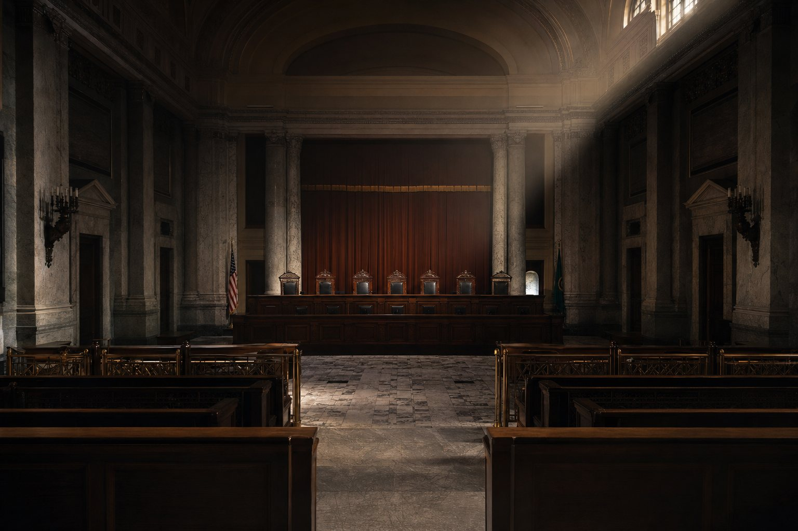

How Washington's
Supreme Court decides
the fate of the income tax.
Nine decades. Seven court rulings. One sentence written in 1933 that still decides whether the state can tax income. Five seats on the court that gets the next vote are on this year's ballot.
In 1889, when Washington became a state, the constitution required that all property be taxed at a uniform rate. In 1933, the state Supreme Court ruled by a single vote that income counts as property. That one sentence is the reason Washington has no graduated income tax. It is also the reason the state has one of the most unique tax structures in the country.
Every income tax the legislature has tried to pass since has been struck down, rebranded, or designed to dodge that ruling. Culliton v. Chase is the keystone brick in a wall built from eight rulings, amendments, and statutes between 1908 and 2023. In 2026, the legislature is trying to climb over it again. The court will decide whether the wall holds.
Five of nine seats are on the ballot. This guide does one thing: it reads the public record on each candidate and asks where they're likely to land when the question reaches them.
How the five races move the court.
Each circle is a seat on the Washington Supreme Court, colored by how that justice is likely to rule on a labeled income tax. Circles with a halo are the five seats up for election this November. Click a scenario to see how the math shifts.
The court as it sits today. Six of nine justices have signaled, through opinions, votes, or appointment coalitions, that they'd uphold a labeled income tax. Two would strike one down. One open seat (Johnson retiring) creates real uncertainty.
A graduated income tax needs 5 votes to survive at the Supreme Court. Culliton needs 5 votes to be formally overturned. These are reads on public signals, not predictions of how any individual justice will vote. For full profiles of the four off-ballot justices, see the bench.
Eight bricks. 93 years.
Culliton isn't a standalone ruling. It's the keystone brick in a wall that took eight rulings, amendments, and statutes to build. Each one stacked on the last. ESSB 6346 is the legislature's latest attempt to climb over it.
-
1908
Wolfe v. Parmenter
Cash is property the instant you receive it. A footnote at the time. The first brick.
Read the case discussion → -
June 1930
Aberdeen Sav. & Loan v. Chase
A tax on net income is a property tax, no matter what the legislature calls it. Substance over label.
Read the opinion → -
Nov 1930
14th Amendment
Voters approve a constitutional rewrite. Property now means "everything, whether tangible or intangible, subject to ownership."
Read Article VII → -
Sept 1933
Culliton v. Chase
5–4. Income is property. A graduated income tax violates the uniformity clause.
Read the opinion → KEYSTONE -
Sept 1933
State ex rel. Stiner v. Yelle
Same day. Excise taxes on specific activities are fine, even if measured by income. The only door left open.
Read the opinion → -
1936
Jensen v. Henneford
You can't rename an income tax "an excise on the privilege of receiving income." Back door closed.
Read the opinion → -
2023
Quinn v. State
Capital gains tax upheld as an excise on the sale of assets. Court declined to revisit Culliton. The workaround held.
Read the opinion (PDF) → -
2026
ESSB 6346 — pending
9.9% tax on income over $1M, labeled an excise on "the receipt of income." A near-synonym for the 1936 statute Jensen killed.
Track the bill →
Eleven candidates. Five seats. One question.
For each candidate, we read the public record — who appointed them, what they did before, what they've said or written, who's backing them — and give a one-sentence read: likely to keep the 1933 rule, scrap it, or where the record isn't clear enough to tell. Read the four sitting justices not on the ballot first — they set the starting math.
Judicial races decide more than judicial races.
Most voters skip them or pick on incumbency. The result: the rules that decide how a state collects revenue swing on tiny turnout, decided by voters who didn't know the question was on the table.
This guide narrows the field to one durable question. There are others worth caring about — temperament, criminal procedure, civil rights, environmental law. For those, check the League of Women Voters and the Washington State Bar.